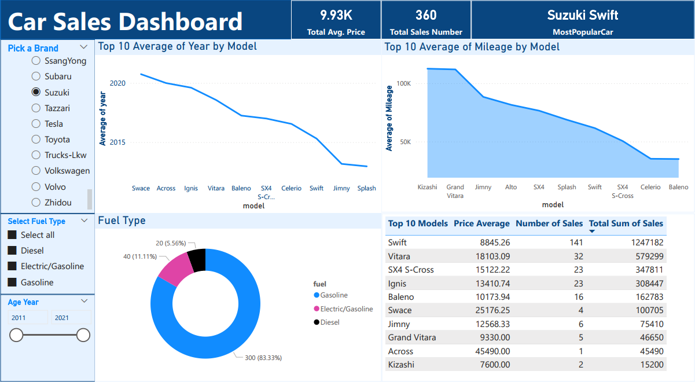

Car Sales Dashboard - Power BI
Overview
This Car Sales Dashboard provides an interactive and data-driven analysis of car sales in Germany. It offers insights into sales trends, average prices, mileage, fuel types, and the most popular car models. The dashboard allows users to filter data by brand, fuel type, and year, making it a useful tool for understanding market trends.
Key Features
KPIs Overview
- Total Average Price: Displays the average price of all cars in the dataset.
- Total Sales Number: Shows the total number of cars sold.
- Most Popular Car: Identifies the car model with the highest number of sales.
Interactive Filters
- Brand Selector: Allows users to filter sales by a specific car brand.
- Fuel Type Filter: Segments the data based on fuel type (Gasoline, Diesel, Electric/Gasoline).
- Year Range Slider: Enables users to analyze sales data within a specific year range.
Data Visualizations
- Top 10 Models - Average Year: Line chart showing the average manufacturing year of the top 10 car models.
- Top 10 Models - Average Mileage: Line chart analyzing the average mileage of the top 10 car models.
- Fuel Type Distribution: Pie chart illustrating the share of different fuel types in the dataset.
- Top 10 Car Models Summary: Table displaying key statistics, including price average, number of sales, and total revenue per model.
Data Source
The dataset is sourced from AutoScout24 Germany, a popular car marketplace. It includes information on car brands, models, mileage, fuel type, year, and pricing.
Technologies Used
- Power BI for data visualization
- DAX for creating KPIs and measures
- Excel (XLSX Dataset) for data storage
How to Use the Dashboard
- Download the Power BI file (.PBIX) from this repository.
- Open it using Microsoft Power BI Desktop.
- Use the interactive filters to analyze car sales trends.
- Gain insights into the most popular models, average prices, and sales distribution.